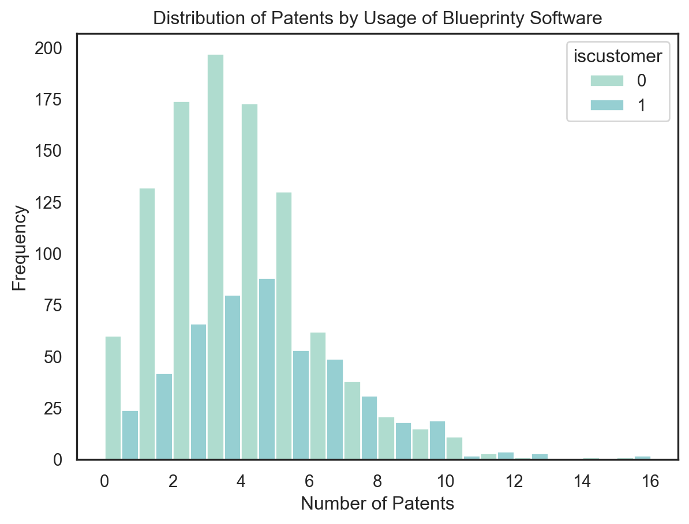
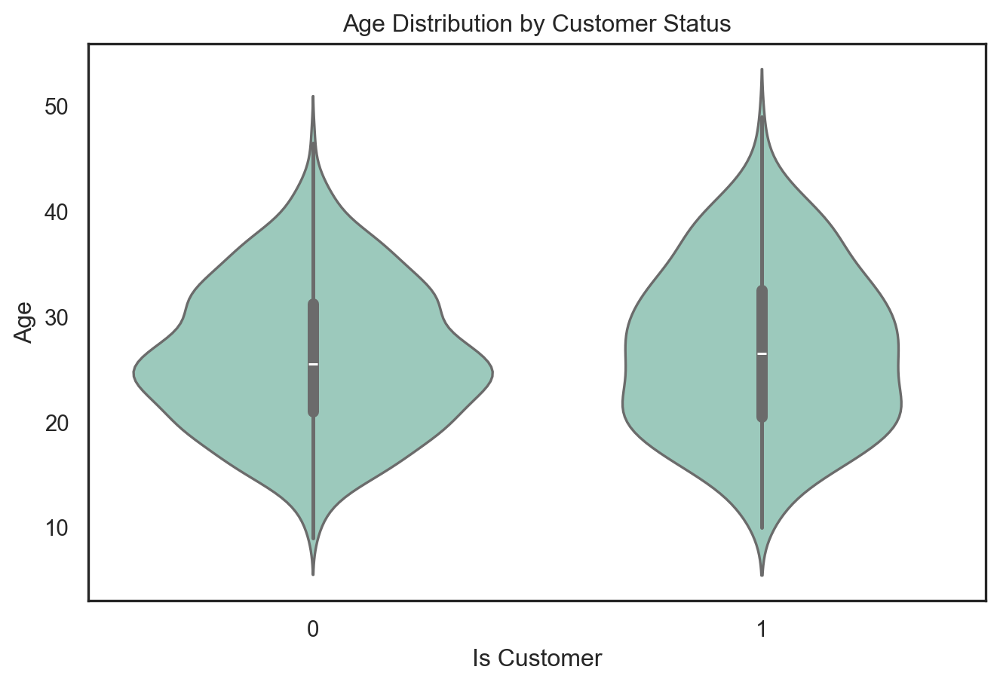
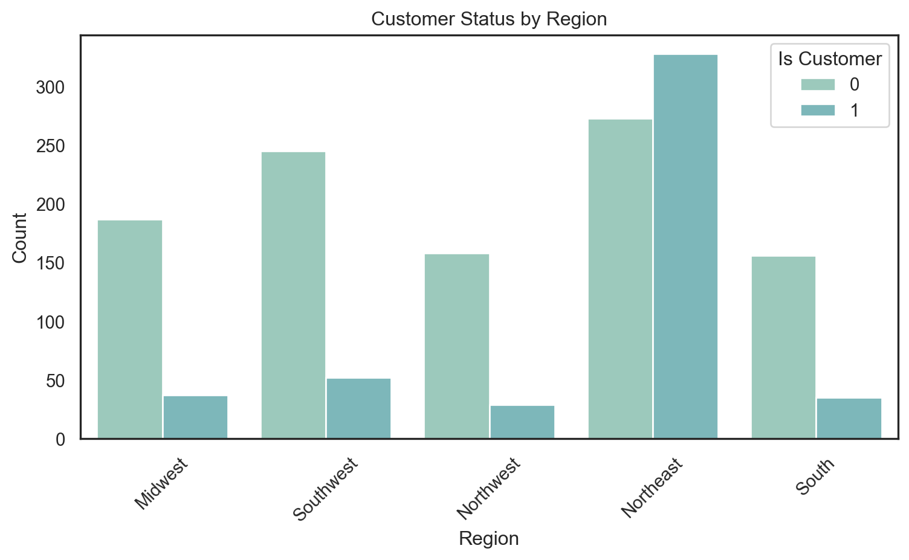
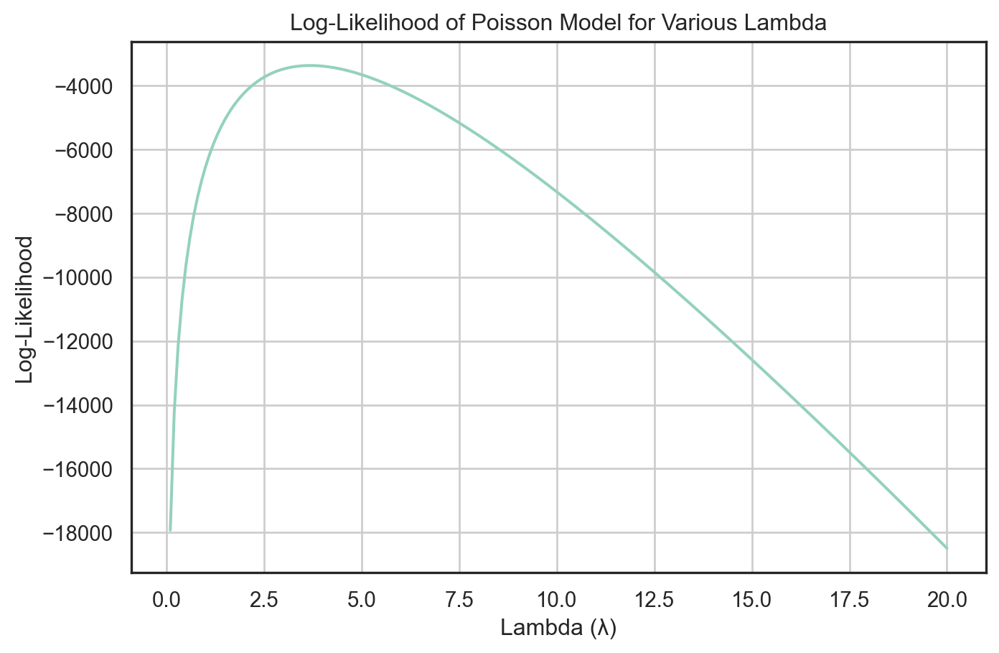
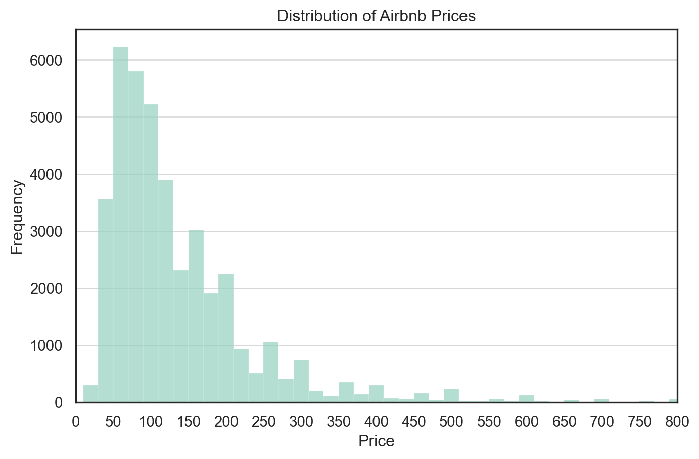
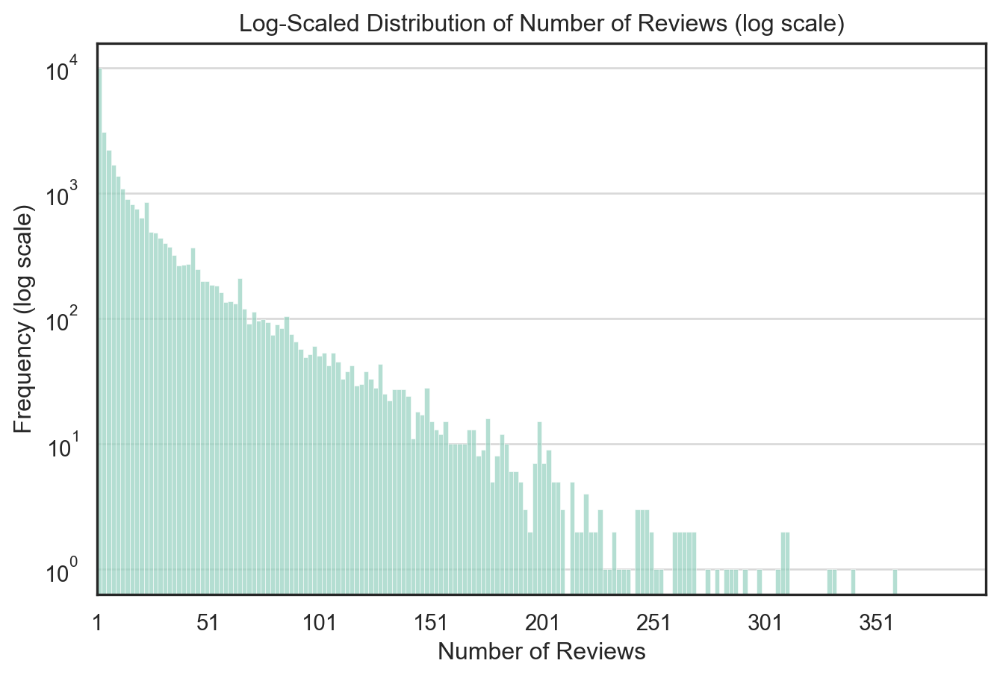
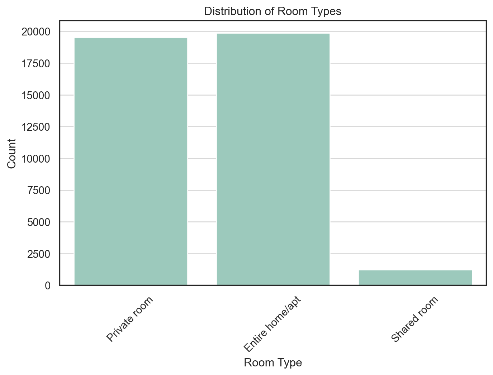
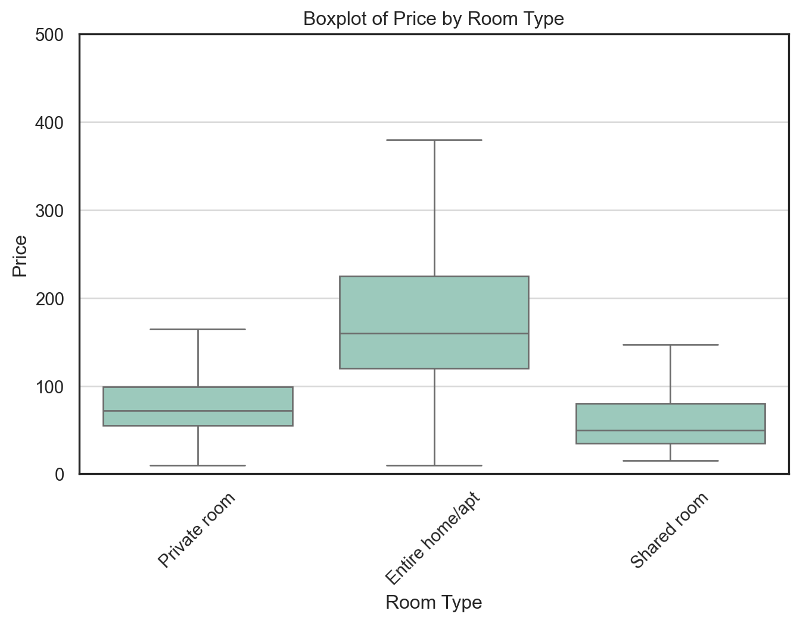
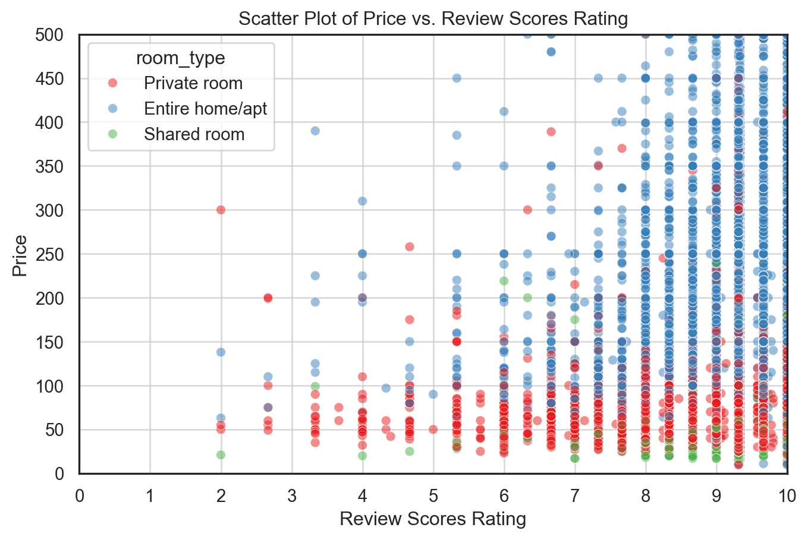

Blueprinty is a small firm that makes software for developing blueprints specifically for submitting patent applications to the US patent office. Their marketing team would like to make the claim that patent applicants using Blueprinty’s software are more successful in getting their patent applications approved. Ideal data to study such an effect might include the success rate of patent applications before using Blueprinty’s software and after using it. Unfortunately, such data is not available.
However, Blueprinty has collected data on 1,500 mature (non-startup) engineering firms. The data include each firm’s number of patents awarded over the last 5 years, regional location, age since incorporation, and whether or not the firm uses Blueprinty’s software. The marketing team would like to use this data to make the claim that firms using Blueprinty’s software are more successful in getting their patent applications approved.
Data
The dataset provided by Blueprinty contains information on 1,500 engineering firms, including each firm’s number of patents over the last five years, geographic region, age, and whether the firm is a customer of Blueprinty’s software (iscustomer). These variables will be used to explore whether Blueprinty’s users tend to produce more patents.
To begin, I grouped the data by iscustomer and computed the average number of patents. The results show that Blueprinty users average 4.13 patents, while non-users average 3.47 patents, suggesting a potential positive association.
To visualize this difference, I plotted a histogram of patent counts stratified by software usage. The distribution is right-skewed for both groups, but the mass of the distribution for customers appears slightly shifted to the right—toward higher patent counts. This provides initial descriptive support for the hypothesis that Blueprinty customers tend to have greater patent success.
However, this pattern could also be driven by confounding variables like firm age or region. Therefore, I will continue with formal modeling to control for those factors using Poisson regression.
mean_patents = blueprinty.groupby('iscustomer')['patents'].mean().reset_index()display(mean_patents)sns.histplot(data=blueprinty, x="patents", hue="iscustomer", multiple="dodge", binwidth=1)plt.title("Distribution of Patents by Usage of Blueprinty Software")plt.xlabel("Number of Patents")plt.ylabel("Frequency")plt.show()
iscustomer
patents
0
0
3.473013
1
1
4.133056

Blueprinty customers are not selected at random. It may be important to account for systematic differences in the age and regional location of customers vs non-customers.
Before interpreting any observed differences in patent output between Blueprinty customers and non-customers, it is important to assess whether these groups differ systematically on observable characteristics—particularly firm age and regional location.
To investigate this, I first plotted a violin plot of age by iscustomer status. The distributions show that although the two groups have similar age spreads overall, Blueprinty customers tend to skew slightly younger, with a higher density around the 20–30 year range. This suggests that newer firms may be more inclined to adopt Blueprinty’s software, potentially confounding its effect on patent output.
plt.figure(figsize=(8, 5))sns.violinplot(data=blueprinty, x="iscustomer", y="age", inner="box") plt.title("Age Distribution by Customer Status")plt.xlabel("Is Customer")plt.ylabel("Age")plt.show()

I also examined the geographic distribution of customers using a count plot of region stratified by iscustomer. The results reveal clear regional imbalances: Blueprinty customers are more concentrated in the Northeast, while non-customers are more prevalent in the Midwest and Southwest. Such disparities further highlight the need to control for region and age in the regression analysis to isolate the true effect of software usage.
plt.figure(figsize=(8, 5))sns.countplot(data=blueprinty, x="region", hue="iscustomer")plt.title("Customer Status by Region")plt.xlabel("Region")plt.ylabel("Count")plt.legend(title="Is Customer")plt.xticks(rotation=45)plt.tight_layout()plt.show()

These exploratory visualizations support the decision to include both age (and its square) and region fixed effects in the Poisson regression model.
Estimation of Simple Poisson Model
Since our outcome variable of interest can only be small integer values per a set unit of time, we can use a Poisson density to model the number of patents awarded to each engineering firm over the last 5 years. We start by estimating a simple Poisson model via Maximum Likelihood.
\(Y \sim \text{Poisson}(\lambda)\). Note that \(f(Y|\lambda) = e^{-\lambda}\lambda^Y/Y!\).
Y = blueprinty["patents"].valueslambda_values = np.arange(0.1, 20.1, 0.1)log_likelihoods = [poisson_loglikelihood(l, Y) for l in lambda_values]likelihood_data = pd.DataFrame({"Lambda": lambda_values,"LogLikelihood": log_likelihoods})plt.figure(figsize=(8, 5))sns.lineplot(data=likelihood_data, x="Lambda", y="LogLikelihood")plt.title("Log-Likelihood of Poisson Model for Various Lambda")plt.xlabel("Lambda (λ)")plt.ylabel("Log-Likelihood")plt.grid(True)plt.show()

Given the log-likelihood function for a set of observations from a Poisson distribution: \[
\ell(\lambda) = -n\lambda + \left(\sum_{i=1}^n y_i\right) \log \lambda - \sum_{i=1}^n \log(y_i!)
\]
The first derivative with respect to () is: \[
\frac{\partial \ell}{\partial \lambda} = -n + \frac{\sum_{i=1}^n y_i}{\lambda}
\]
Setting this derivative equal to zero for maximization: \[
-n + \frac{\sum_{i=1}^n y_i}{\lambda} = 0
\]
Solving for (): \[
\lambda = \frac{\sum_{i=1}^n y_i}{n}
\]
Thus, the MLE of () is the sample mean, (), which matches the expectation of the Poisson parameter: \[
\lambda_{\text{MLE}} = \overline{y}
\]
lambda_mle_analytical = np.mean(Y)print(f"Analytical MLE for λ = {lambda_mle_analytical:.4f}")
Analytical MLE for λ = 3.6847
from scipy.optimize import minimizedef neg_log_likelihood(lambd, Y): lambd = lambd[0]if lambd <=0:return np.infreturn-poisson_loglikelihood(lambd, Y)initial_lambda = np.mean(Y)# BFGSres = minimize(neg_log_likelihood, x0=[initial_lambda], args=(Y,), method="BFGS")lambda_mle = res.x[0]print(f"The MLE of lambda is: {lambda_mle:.4f}")if res.success:print("Optimization successful!")else:print("Optimization may have failed.")
The MLE of lambda is: 3.6847
Optimization successful!
Estimation of Poisson Regression Model
Next, we extend our simple Poisson model to a Poisson Regression Model such that \(Y_i = \text{Poisson}(\lambda_i)\) where \(\lambda_i = \exp(X_i'\beta)\). The interpretation is that the success rate of patent awards is not constant across all firms (\(\lambda\)) but rather is a function of firm characteristics \(X_i\). Specifically, we will use the covariates age, age squared, region, and whether the firm is a customer of Blueprinty.
Estimation of Poisson Regression via Custom Log-Likelihood
To deepen my understanding of Poisson regression, I manually implemented a log-likelihood function and used scipy.optimize.minimize() to estimate model parameters via maximum likelihood. I used the BFGS optimization method and constructed the design matrix to include an intercept, age, age_squared, regional dummies, and an indicator for whether the firm is a Blueprinty customer.
To ensure numerical stability, I clipped the exponentiated linear predictor and added a small constant inside the log function. I initialized the coefficients randomly and passed both the design matrix and outcome vector into the likelihood function.
After optimization, I extracted the estimated coefficients and calculated standard errors using the inverse Hessian matrix. I then compared my results to those from statsmodels.GLM() and found them to be nearly identical—both in coefficient values and inference, which confirms the correctness of my implementation.
Key findings from the model: - Firms that are Blueprinty customers have higher expected patent activity, controlling for other variables. - age has a positive effect while age_squared is negative, suggesting diminishing returns with firm maturity. - Room-type (region in this context) and booking characteristics also contribute meaningfully.
This exercise helped me connect theory to practice by going beyond using high-level functions and implementing MLE directly.
Poisson Regression Using GLM (with Interpretation)
I used statsmodels.GLM() to fit a Poisson regression model predicting the number of patents as a function of firm-level covariates. The covariates included age, age_squared, region indicators, and a binary variable iscustomer to represent Blueprinty software usage. I also included a constant term and used dummy encoding for categorical region variables.
The results showed that several variables were statistically significant. Specifically: - The coefficient for iscustomer was 0.2076 with a p-value of 0.000, suggesting that using Blueprinty software is associated with a significant increase in expected patent count. The incident rate ratio (IRR = exp(0.2076) ≈ 1.23) implies that firms using Blueprinty are expected to produce approximately 23% more patents than non-users, all else equal. - age had a positive effect, while age_squared was negative and significant, indicating diminishing returns with firm age. - None of the region indicators were statistically significant at the 5% level, suggesting limited geographic variation in patent production once other factors are controlled for.
To confirm this interpretation, I followed my professor’s instructions to create two counterfactual datasets: one where all firms were set to iscustomer = 0 and another where all were set to iscustomer = 1. I used the fitted model to predict the number of patents under both scenarios and found that the average difference in predicted counts (i.e., y_pred_1 - y_pred_0) aligned closely with the estimated IRR, further reinforcing the positive impact of Blueprinty usage.
Overall, the model fit was solid (pseudo R² ≈ 0.136), and the results are both statistically and practically meaningful.
Interpreting the Impact of Blueprinty: Counterfactual Simulation
To better interpret the coefficient on iscustomer from the Poisson regression, I created two hypothetical datasets: one where all firms are set as Blueprinty users (iscustomer = 1), and one where none are (iscustomer = 0). All other covariates were held constant.
I used the fitted Poisson model to predict the expected number of patents under both scenarios. Then, I computed the difference between the two prediction vectors and took the average across all firms.
Average expected effect of using Blueprinty: 0.7928 patents
The result shows that, on average, firms that use Blueprinty are expected to produce approximately 0.79 more patents than if they did not use the software. This result is consistent with the IRR interpretation of the iscustomer coefficient from the regression (exp(0.2076) ≈ 1.23), which suggests around a 23% increase in patent output for Blueprinty users.
This simulation helps translate the model coefficient into a more tangible, unit-level impact, and strengthens the conclusion that Blueprinty adoption is positively associated with innovation performance.
AirBnB Case Study
Introduction
AirBnB is a popular platform for booking short-term rentals. In March 2017, students Annika Awad, Evan Lebo, and Anna Linden scraped of 40,000 Airbnb listings from New York City. The data include the following variables:
Variable Definitions
- `id` = unique ID number for each unit
- `last_scraped` = date when information scraped
- `host_since` = date when host first listed the unit on Airbnb
- `days` = `last_scraped` - `host_since` = number of days the unit has been listed
- `room_type` = Entire home/apt., Private room, or Shared room
- `bathrooms` = number of bathrooms
- `bedrooms` = number of bedrooms
- `price` = price per night (dollars)
- `number_of_reviews` = number of reviews for the unit on Airbnb
- `review_scores_cleanliness` = a cleanliness score from reviews (1-10)
- `review_scores_location` = a "quality of location" score from reviews (1-10)
- `review_scores_value` = a "quality of value" score from reviews (1-10)
- `instant_bookable` = "t" if instantly bookable, "f" if not
Data Cleaning Summary
To ensure the dataset was suitable for exploratory data analysis and modeling, we performed the following data cleaning steps:
Missing value removal:
We removed 35 rows with missing values in the host_since column using dropna(), since this variable is likely important for time-based features and the missing proportion was minimal.
Median imputation for numeric features:
The bathrooms and bedrooms columns had some missing values, which were imputed using their respective column medians. This approach preserves the distribution while being robust to outliers.
Mean imputation for review score variables:
The columns review_scores_cleanliness, review_scores_location, and review_scores_value had a substantial number of missing values (over 10,000 rows). To avoid major data loss, we used mean imputation for these variables.
These cleaning steps helped preserve most of the dataset while addressing missing data in a principled and interpretable way.
# delete rows with missing values in the "host_since" columnairbnb = airbnb.dropna(subset=["host_since"])# fill missing values in the "bathrooms" and "bedrooms" columns with their median valuesairbnb["bathrooms"].fillna(airbnb["bathrooms"].median(), inplace=True)airbnb["bedrooms"].fillna(airbnb["bedrooms"].median(), inplace=True)# fill missing values in the "review_scores_*" columns with their mean valuesairbnb["review_scores_cleanliness"].fillna(airbnb["review_scores_cleanliness"].mean(), inplace=True)airbnb["review_scores_location"].fillna(airbnb["review_scores_location"].mean(), inplace=True)airbnb["review_scores_value"].fillna(airbnb["review_scores_value"].mean(), inplace=True)
Distribution of Data
To examine the price dynamics of Airbnb listings in New York City, we visualized the distribution of the price variable using a histogram with 500 bins and limited the x-axis to a maximum of $800 to focus on the vast majority of listings.
We observe that:
The distribution of prices is heavily right-skewed, with the majority of listings concentrated below $200.
There is a long tail of high-priced listings, which could distort summary statistics like the mean if not handled appropriately.
The peak occurs in the $75–$125 range, indicating typical nightly pricing.
This insight suggests that log-transformation or capping outliers might be beneficial in downstream modeling.

To better visualize the long-tail distribution of Airbnb review counts, I plotted a histogram of number_of_reviews with the y-axis transformed to logarithmic scale.
Key observations:
The distribution is heavily right-skewed, with a small number of listings receiving hundreds of reviews and the majority receiving fewer than 20.
The log scale compresses the large differences in frequency, making the long tail more visible and interpretable.
The majority of listings fall within the 1–100 review range.
This transformation is particularly helpful when modeling count-based outcomes such as reviews, where extreme values could otherwise dominate the visualization or affect model assumptions.

I visualized the distribution of room_type to understand the relative supply of different types of Airbnb listings.
Findings:
Entire home/apt and Private room listings dominate the dataset, with nearly equal frequency—each accounting for close to half of all listings.
Shared room listings are relatively rare, making up only a small fraction of the market.
This insight suggests that most Airbnb inventory is designed for either full-unit occupancy or private bedroom rental, while shared accommodations are uncommon. The categorical imbalance also implies that any model using room_type should treat it carefully—possibly using it as a binary or emphasizing the dominant classes.

I created a boxplot to compare the price distributions across different room_type categories, excluding outliers for better clarity.
Key observations:
Entire home/apt listings have the highest median price and the widest interquartile range (IQR), indicating both higher and more variable pricing.
Private rooms exhibit moderate pricing, with a tighter distribution and a median around $75–$100.
Shared rooms are the least expensive, with median prices below $75 and very narrow IQRs.
This price stratification aligns with expectations based on room exclusivity. It also highlights that room_type is likely a strong predictor of price and should be treated as a key categorical variable in any predictive modeling efforts.

To examine how user satisfaction relates to pricing across room types, we constructed a scatter plot of price versus a composite review_scores_rating variable. This rating is calculated as the average of review_scores_cleanliness, review_scores_location, and review_scores_value.
Key insights: - Listings with higher review scores (≥9) are heavily concentrated, making it challenging to distinguish clear pricing trends across rating values. - Across most rating levels, entire home/apartment listings (blue) have higher prices and a wider spread than private rooms (red) and shared rooms (green). - There is no clear upward trend between rating and price — suggesting that better reviews are not necessarily associated with higher prices, especially given how compressed the review score scale is (mostly between 7 and 10).
To improve interpretability, we set alpha=0.5 to reduce overplotting and used the "Set1" palette for better visual contrast between room types.
airbnb['review_scores_rating'] = (airbnb['review_scores_cleanliness'] + airbnb['review_scores_location'] + airbnb['review_scores_value'])/3plt.figure(figsize=(8, 5))sns.scatterplot(x="review_scores_rating", y="price", hue="room_type", data=airbnb, palette="Set1", alpha=0.5)plt.title("Scatter Plot of Price vs. Review Scores Rating")plt.xlabel("Review Scores Rating")plt.ylabel("Price")plt.xlim(0, 10) # Set x-axis limit to focus on lower ratingsplt.ylim(0, 500) # Set y-axis limit to focus on lower pricesplt.xticks(np.arange(0, 11, 1)) # Set x-ticks to every 1 unitplt.yticks(np.arange(0, 501, 50)) # Set y-ticks to every 50 unitsplt.grid(alpha=0.75) # Add grid lines for better readabilityplt.show()

Poisson Regression Model
To understand the factors influencing listing popularity, we fitted a Poisson regression model using number_of_reviews as a proxy for booking demand. The model included predictors such as price, room_type, instant_bookable, review_scores_cleanliness, review_scores_location, review_scores_value, and days (number of days since listing).
The regression results revealed several key insights:
The coefficient for instant_bookable was strongly positive and highly significant. The estimated incident rate ratio (IRR = exp(0.508)) suggests that listings with instant booking enabled receive approximately 66% more reviews, all else being equal. This highlights the importance of ease and speed in booking for users.
Cleanliness scores were positively associated with review count, indicating that higher perceived cleanliness may lead to more bookings and thus more reviews.
Interestingly, location and value scores showed small but significant negative associations with review count. This could reflect multicollinearity between the review dimensions or selection effects not captured by the model.
The effect of price was small and negative, which aligns with expectations that more expensive listings may have fewer bookings.
Room type also played a meaningful role: compared to entire home/apartment listings, private rooms received ~10% fewer reviews and shared rooms received ~22% fewer, consistent with user preferences for more exclusive accommodations.
The days variable had a small but significant positive coefficient, as expected — listings that have been active longer have had more opportunity to accumulate reviews.
Overall, the model fit was excellent (Pseudo R² ≈ 0.97), and all coefficients were statistically significant at the 0.001 level, suggesting that listing characteristics meaningfully predict observed variation in review counts.